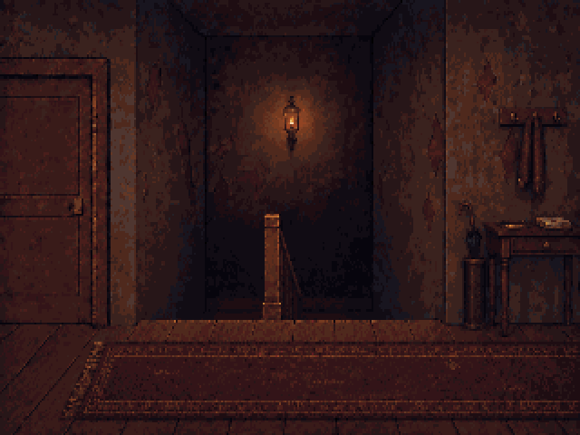

A single lamp flickers above the dark stairwell. A worn runner starts beneath the left door and continues off-screen to the right; the scarf is visibly folded over the middle coat hook.

Previous map and furnishings study
The flight width is 0.95 m; each drop is 1.68 m. The turquoise line in the construction views follows the continuous walking route. It is not part of the artwork. The upper floor naturally occludes most of the lower flight from the game camera.
Editable Blender model · Pixelorama room · Lamp timing and placement · Construction and paint notes · Geometry checks · Export verification · Street options